Aluminum 6061 Material Report
With a brief discussion on use in climbing cams
By Cole Rutkowski
Introduction:
From Camaros to Coke cans, Aluminum 6061 is one of the most widely used metals in consumer products. It is heralded for its affordability, machinability, strength to weight ratio, corrosion resistance, and versatility. It is used in car parts, soda cans, fishing reels, radios, guns, ladders, cameras, pipes, airplanes, and more! According to Howard Precision Metals Inc., aluminum alloys will make up approximately 16% of a vehicle's weight by 20281, with 6061 being primarily in parts subjected to water and weather conditions.
After reading about how cool aluminum 6061 is, my first question was: Would I trust my life to it? Well, it depends on the situation. For me, that situation is falling 30 feet with nothing but .5 cubic inches of aluminum 6061 to catch me! This paper will discuss the material structure, properties, manufacture, durability, and sustainability of Aluminum 6061 with a focus on the mathematically brilliant logarithmic spiral found in climbing cams and the hunk of metal that is the climbing nut.
A Brief History on Cams and Nuts:
As mountaineering progressed in the 19th and 20th century and ethics became more “ethical”, and a new type of protection device was needed that could replace the old hammer and piton. Pitons (essentially metal sticks) were hammered into cracks in a rock, to which a rope was connected. In the case of a fall, the piton would hold the rope and the mountaineer would be caught during the fall by this safety system. However, pitons damaged the rock and left unnatural scars when removed or ‘bolted ladders’ when left in place. Both scenarios were seen as unethical in American mountaineering: the former was seen as destructive while the latter was seen as outside the adventurous spirit of the sport. So, a new method was needed to protect a route ‘cleanly’, or with the ability to be removed after an ascent without damaging the rock. The first solution was the humble nut.
Nuts are themselves simple; they are wedges or chocks that fit into a crack in a rock (Image 1). When a climber falls, the force from the fall is put onto the nut, which, when placed correctly, wedges itself tightly in the rock and holds the climber. The original nuts were fastening nuts, found on railways, with cords tied around them. Later, machined models were developed with aluminum and brass alloys.2
Years later, the first spring-loaded camming devices (SLCD) were developed. These use a logarithmic spiral allowing for a range of crack sizes while keeping the angle constant between the rock and the point of contact all within a single device (Image 2). When the friction between the rock and the lobe in contact with the rock is sufficient, the lobe rolls up and cams itself into place.
Image 1: properly placed nut3
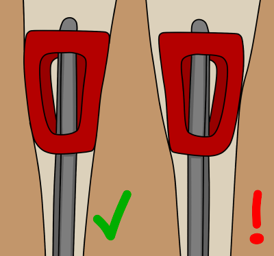Image 2: geometry of cam lobe4
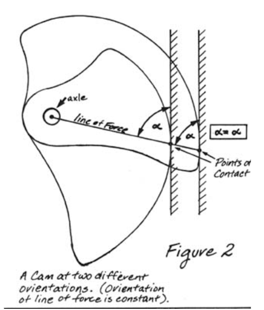Image 3: example of a piton5
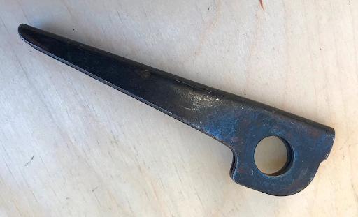Image 4: display of early cams6
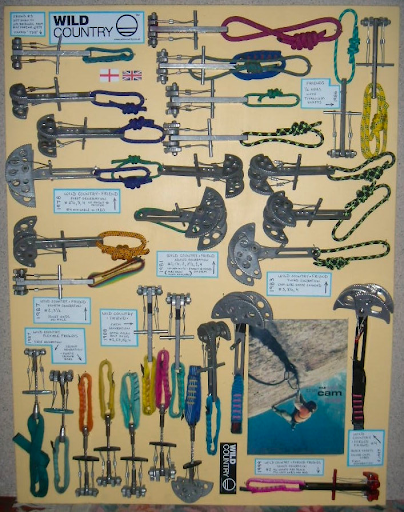Aluminum 6061 and Climbing Protection:
To the designers and manufacturers of these safety pieces, the first question is strength. Simply put, metal is strong. The questions that follow are numerous: How strong do pieces need to be? How many large loadings can they support? How can they break? If they are too soft, could they get stuck? If they are too hard, could they not wedge correctly? How hard are these pieces to produce? Are they light enough? Are they affordable? Can I trust them with my life? And should others trust them too?
Aluminum 7075 is the standard for climbing protection in the 21st century, but since the invention of nuts and cams both 6061 and 7075 have been used. This paper is based on the not so uncommon climber/engineering student that has looked at climbing gear and said, “I could make that myself.” With the affordability, accessibility, and machinability of aluminum 6061, I hope to come to the conclusion on if 6061 is good enough for cams and nuts.
Material Structure:
Aluminum 6061 is composed of Aluminum, Magnesium, Silicon, Copper, and Chromium, but can also contain Iron, Zinc, Titanium, and Manganese. The specified quantities for 6061 are listed below in Image 5. The reported density of Aluminum 6061 is 2.7 g/cm^3, which is close to that of pure aluminum7. Aluminum has a face-centered cubic structure with unit cell length of .404nm, and does not have a ductile to brittle transition8. The atomic composition of the elements in Aluminum 6061 are listed below.
Electron configuration: [Ne] 3s² 3p
13 Protons, 14 Neutrons, 13 Electrons
Atomic radius: .143nm
Only Al-26 (radioactive) and Al-27 (stable) occur naturally9
Magnesium:
Electron configuration: [Ne] 3s²
12 Protons, 12 Neutrons, 12 Electrons
Atomic radius: .16nm
Only Mg-24, Mg-25, and Mg-26 occur naturally10
Silicon:
Electron configuration: [Ne] 3s² 3p²
14 Protons, 14 Neutrons, 14 Electrons
Atomic radius: .132nm
Only Si-28, Si-29, and Si-30 are stable and naturally ocurring11
Copper:
Electron configuration: [Ar] 3d¹⁰ 4s¹
29 Protons, 35 Neutrons, 29 Electrons
Atomic radius: .128nm
Only Cu-63 and Cu-65 are stable isotopes12
Image 5: Alloy Composition13
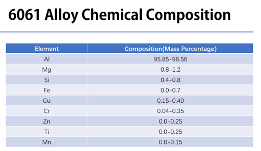Image 6: Microscope View14
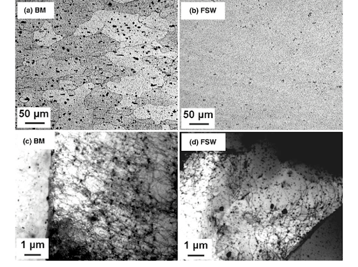Image 7: Phase Diagram15
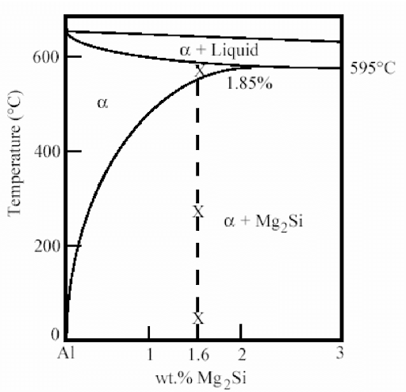Material Properties:
Image 8: Material Properties16
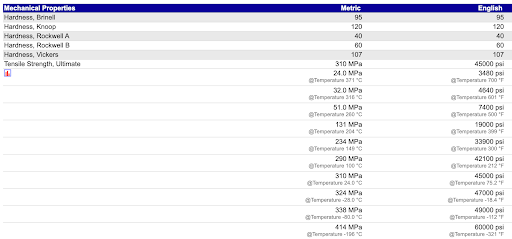Image 9: Comparative Stress-Strain curve of common Aluminum alloys17
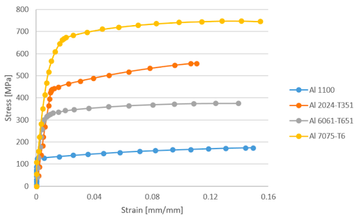Image 10: Yield Strength vs temperature for Aluminum alloys18
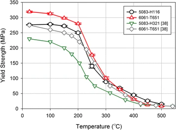For the case of climbing cams, the lobes will primarily experience bearing stress within the axle hole, which is a likely point of failure. Temperature and fatigue are also important factors to consider for climbing gear. A reasonable range of forces and temperature in most climbing conditions is between 0 and 100 degrees fahrenheit and a maximum of 12kN of force applied downward. Later, I will approximate stresses a cam will experience and compare them to the material property results above to determine if Aluminum 6061 is an appropriate material for cam lobes
Processing and Production:
Bauxite is a relatively common sedimentary rock with high aluminum content and is the world’s primary source of aluminum and gallium. According to The Aluminum Association, “Bauxite ore is the world’s primary source of aluminum. The ore must first be chemically processed to produce alumina (aluminum oxide).”19 Australia, Guinea, and China are the highest producers of bauxite, accounting for more than half of the world’s production of the mineral. It is usually strip mined because it is found near the surface of the mining areas. Bauxite is refined through the Bayer process to produce aluminum oxide, which then is separated into aluminum through electrolysis20. For aluminum 6061, Magnesium, Silicon, and Copper are the most abundant elements besides aluminum. Magnesium is typically derived from magnesite or dolomite for production purposes. Then it will undergo the Pidgeon process (used in China) or the Dow process (United States) do produce magnesium21. Quartzite is often mined to produce silicon. “Silicon of 96–99% purity is made by carbothermically reducing quartzite or sand with highly pure coke. The reduction is carried out in an electric arc furnace, with an excess of SiO 2 used to stop silicon carbide (SiC) from accumulating22”. Copper is found in a range of mined materials and is one of the oldest mined materials in the world. Often, it is smelted and then refined through electrolysis or fire refining.
Aluminum 6061 is produced through mixing each element within its acceptable ratios before being formed into a product through casting, rolling, extruding, or forging. For our purposes, we will look at aluminum sheets that are rolled23. Below is an image that illustrates the rolling process.
Image 11: Bauxite mine in Australia24
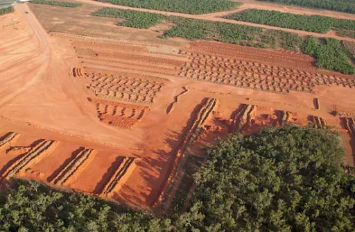Image 12: Rolling process254
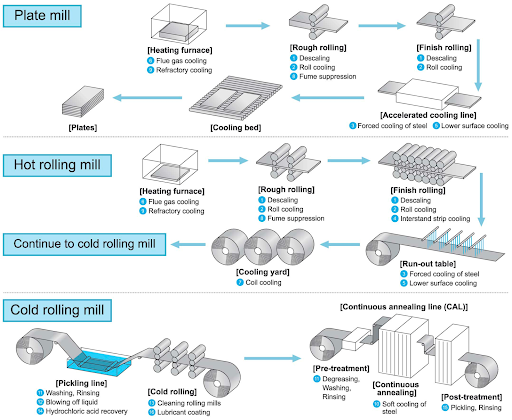Defects and Durability:
Defects in Aluminum 6061 can significantly affect its material properties, and thus defects must be taken into consideration when analyzing Aluminum for commercial use. Common defects include porosity, inclusions, and cracking. Porosity (similar to pores) is the existence of small bubbles or voids within the materials and can develop from casting and welding. This weakens the strength of the material and is best to be avoided for high-load bearing structures. Inclusions are impurities or particles trapped in the aluminum matrix during manufacturing processes. They act as concentration points for stress and can lead to premature failure from high loads. Cracking can form from improper heat treatment of aluminum and propagation will lead to significant reductions in durability and strength.
Image 13: Example of cracks in Aluminum 606126
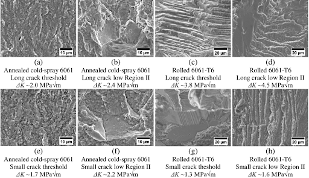Image 14: Porosity in Aluminum 606127
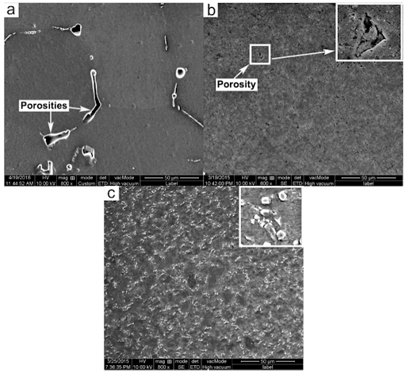Measurements and Analysis:
Several techniques are used to measure and analyze the material properties of Aluminum 6061. The techniques include tensile and compressive tests, shear and torsion tests, hardness tests, fatigue testing, and fracture toughness. Tensile and compression tests involve using a testing machine to enact a tensile or compressive force on a specimen. During the test, data of the forces applied over time and the change in length of the material are collected, which can be used to produce a stress-strain curve and calculate yield and ultimate stress.
Shear and torsion tests apply a torque on a specimen and will measure the torque applied and the change in angle of the specimen at the point of contact with the machine.
Fatigue tests will have a periodic force applied over a large number of repetitions to determine how many loadings a specimen can undergo before failure.
Image 15: Universal testing machine28
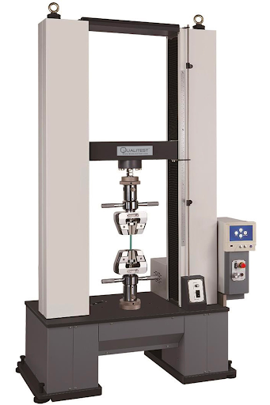Image 16: Load vs time curve for fatigue testing29
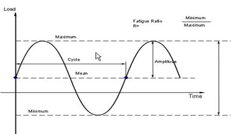Health and Safety:
Despite its widespread use for industrial and consumer products, excessive exposure can lead to adverse side effects. Aluminum poison testing can be accessed though hair, nails, sweat, blood, and urine samples. For urine sample tests, The National Center for Biotechnology Information reports the threshold for neurological effects occurs at 60 micrograms per liter and the critical concentration of toxicity in humans that will cause neurological complications occurs at 100 micrograms per liter. The effects they report are: “Aluminum toxicity affects different body organs, including brain, parathyroid gland, kidney, lungs, liver, bones, and bone marrow, leading to various clinical manifestations. Aluminum effect on bone marrow leads to the formation of abnormal red blood cells besides its effect parathyroid gland and on musculoskeletal system is represented by abnormalities like osteoporosis and osteomalacia. Liver stenosis and nephrotic syndrome are other important manifestations of aluminum toxicity. Brain and respiratory system can also be severely damaged, followed by aluminum poisoning. Memory loss, tremor, jerk, and death are important manifestations of brain injury.”30 Below is a chart from Sierra Aluminum that lists the exposure limits of compounds in Aluminum 6061. It is important to note that Copper and Manganese have the lowest exposure limits (50 times lower than Aluminum), however because they are in much lower quantities Aluminum 6061 than Aluminum, overexposure to Aluminum will occur well before overexposure to the other compounds, and thus the effects of aluminum exposure are more significant in regards to Aluminum 6061.
The CDC reports that aluminum can enter and leave the body through inhalation, ingestion, and dermal contact. Most aluminum ingested will leave through fecal matter while aluminum in the bloodstream leaves through urine. They report than oral exposure to aluminum is not typically harmful, and it is debated whether oral consumption can lead to Alzheimer’s. In regards to inhalation of aluminum by worker’s, the CDC says, “Workers who breathe large amounts of aluminum dusts can have lung problems, such as coughing or changes that show up in chest X-rays. The use of breathing masks and controls on the levels of dust in factories have largely eliminated this problem.”31
Image 17: Exposure limits of compounds in Aluminum 606132
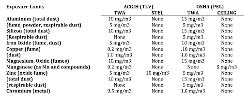Human labor safety conditions are also an important factor to consider. Reuters reports that China has some of the worst coal mine conditions in the world33, and these conditions are not much improved in metal mines. AP News reports that Uyghur forced labor labor is used in metal mines34 and the Washington Post reports that mining in impoverished areas with neglected safety factors contaminating the local population35. They report that, “Researchers... sampled dust on road surfaces around Dachang. A study published in June said they found heavy-metal concentrations far above national safety limits: arsenic at 111 times, cadmium at 55 times and lead at 2.45 times. Heavy-metal levels inside homes were only slightly lower, according to the researchers.”
Environmental Sustainability:
Greenhouse gas produced by the Aluminum sector is an important factor to consider when using aluminum products. Below is a chart that lists the CO2 emissions in the aluminum sector. High carbon emissions increase the rate of climate change by increasing the greenhouse effect in the earth’s atmosphere, which traps more heat and increases global temperatures. China is a larger emitter of greenhouse gasses in the aluminum industry. They are responsible for producing more than half of the world’s aluminum, but are responsible for 81% of the greenhouse gas emissions in the industry36. Responsible sourcing of Aluminum, reuse, and recyclability are important factors to consider when purchasing Aluminum for consumer and industrial purposes.
Image 18: CO2 Emissions by aluminum industry37
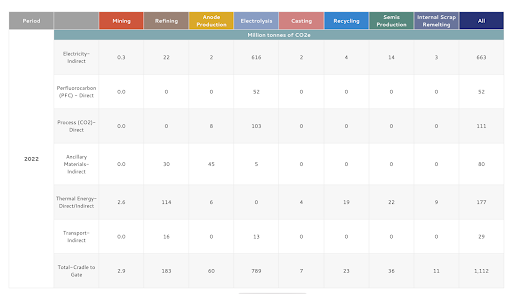Image 19: C02 Content in the Atmosphere since 196038
Is Aluminum 6061 sufficient for a Spring Loaded Camming Device?
In this section, we will consider the forces applied to a cam, the maximum bearing force in the axle hole of the lobes, the maximum downward force on a cam, the bearing strength of Aluminum 6061, and the price of stock 6061 vs 7075.
One important factor that we will not discuss is hardness and coefficient of friction between the lobes and different rock types. A softer metal will deform slightly and lodge better into non-uniform cracks, however it is more susceptible to permanent deformation at the point of contact with the rock. The coefficient of friction between the metal and the rock is also important, and if the coefficient is too low the cam will slip out of the crack. We will not discuss these factors, however the coefficient of friction of Aluminum 6061 is generally accepted to be sufficient in most rock types. We will make the assumptions that the lobe will not have any deformation and will only break brittley at the axle hole.
Using the formula for bearing stress σ = F/A, and rearranging we get F = σA. Because a cam has 4 lobes, each lobe will experience ¼ of the total force applied on the cam axle. Using a derivation for force on each lobe provide by Vaino Kodas39, we get that the force on each lobe is at the axle is F = (T/4)*SQRT(1+1/μ2), where μ is the spiral coefficient (approximately .25 in most cams) and T is the downward force applied on the cam. More information about the derivation of forces on a single axle cam is provided on Vaino’s website as well as John Middendorf’s website40. Using a diameter of .25in for the lobe hole, .5in for the thickness of the lobe, and a maximum bearing stress σ of 607MPa (see table 6), and area A = diameter*thickness, we can then solve for T, the maximum force applied on the cam before the lobes fail at the axle whole. Our final equation if then: T = (σA) / sqrt(1+1/μ2). Plugging in and converting units, we find that the maximum load the cam can support before breaking at the axle is 47.5 Kn. This is well above the reported strength of cams, which is generally between 6 and 13 Kn, depending on the model and size of the cam. Typically a cam will break in its shaft at the reported maximum loads, thus we can conclude that Aluminum 6061 is sufficiently strong for use as a cam lobe!
We will next use McMaster-Carr to compare the pricing of Aluminum 6061 vs 7075. Using the same dimensions for each alloy, we can compare 8” by 8” by 1” thick sheets of each. Aluminum 6061 (part number 9246K6141) in these dimensions costs $78.14, which Aluminum 7075 (part number 9037K2842) costs $142.05.
In this section, we determined that Aluminum 6061 is sufficiently strong when used as a cam lobe and it is notably cheaper (almost half the price!) than Aluminum 7075. We can finally conclude that Aluminum 6061 is a strong and affordable option to be used in a climbing cam!
Citations
1: https://www.howardprecision.com/why-are-aluminum-alloys-used-in-the-auto-industry/#:~:text=F
2: https://www.climbing.com/gear/the-nut-chronicles/
3: https://www.vdiffclimbing.com/nuts/
4: https://www.bigwalls.net/climb/camf/
5: https://www.karabinclimbingmuseum.com/faders-pitons.html
6: https://www.karabinclimbingmuseum.com/cam-devices-display.html
7: https://asm.matweb.com/search/SpecificMaterial.asp?bassnum=ma6061t6
8: https://industrialmetalservice.com/metal-university/what-is-the-ductile-to-brittle-transition-temperature-of-6061-aluminum/#:
9: https://wwwrcamnl.wr.usgs.gov/isoig/period/al_iig.html#:~:text=Periodic%20Table%2D%2DAluminum,x106%20yr
10: https://www.pearson.com/channels/general-chemistry/asset/6062eecc/magnesium-has-three-naturally-occurring-isotopes-24-mg-23-985-with-78-99-abundan
11: https://www.sciencedirect.com/topics/earth-and-planetary-sciences/silicon-isotopes
12: https://www.ncbi.nlm.nih.gov/pmc/articles/PMC4033511/
13: https://at-machining.com/6061-aluminium-alloy/
14: https://www.researchgate.net/figure/Microscopy-of-the-6061-T6-Al-alloy-a-base-material-and-b-FSW-stir-zone-The-TEM_fig4_226759261
15: https://www.researchgate.net/figure/Pseudo-binary-phase-diagram-for-the-6061-Al-system-23-Heat-Treatment-of-Aluminium_fig1_323393738
16: https://www.matweb.com/search/DataSheet.aspx?MatGUID=b8d536e0b9b54bd7b69e4124d8f1d20a
17: https://www.mdpi.com/2075-4701/10/7/904
18: https://firesciencereviews.springeropen.com/articles/10.1186/s40038-015-0007-5
19: https://www.aluminum.org/bauxite-101#:~:text=Production%20and%20reserves,in%20Arkansas%2C%20Alabama%20and%20Georgia
20: https://web.archive.org/web/20180225224144/http://www.bbc.co.uk/schools/gcsebitesize/science/ add_gateway_pre_2011/ periodictable/electrolysisrev3.shtml
21: https://www.usgs.gov/centers/national-minerals-information-center/magnesium-statistics-and-information
22: https://en.wikipedia.org/wiki/Silicon#CITEREFGreenwoodEarnshaw1997
23: https://www.mcmaster.com/products/bars/material~6061-aluminum/oversized-multipurpose-6061-aluminum-sheets/
24: https://kids.britannica.com/students/assembly/view/227635
25: https://www.ikeuchi.eu/solutions/industries/steel-making-industry/plate-mill-rolling-mill-production/
26: https://www.researchgate.net/figure/SEM-fracture-surfaces-of-long-crack-growth-in-a-b-annealed-cold-spray-6061-and-7-c-d_fig1_267901718
27: https://www.mdpi.com/1996-1944/9/6/407
28: https://www.worldoftest.com/electro-mechanical-dual-column-universal-testing-machine-qm-100200300500
29: https://www.wmtr.com/What_Is_Fatigue_Testing.html
30: https://www.ncbi.nlm.nih.gov/pmc/articles/PMC8767391/#:~:text=Liver%20stenosis%20and%20nephrotic%20
31: https://wwwn.cdc.gov/tsp/phs/phs.aspx?phsid=1076&toxid=34#:~:text=You%20cannot%20avoid%20exposure%20to,not%20considered%20to%20be%20harmful
32: https://www.kloecknermetals.com/wp-content/uploads/2017/07/Novelis-Uncoated-Aluminum-Metal-5XXX-Type-Alloys.pdf
33: https://www.reuters.com/world/china/china-revise-mine-safety-law-after-fatal-accidents-2023-09-18
34: https://apnews.com/article/china-auto-xinjiang-uyghur-forced-labor-9661907b7580afa6d5c62c7c8dfcb232
35: https://www.washingtonpost.com/world/asia_pacific/chinese-metal-mines-feed-the-global-demand-for-gadgets
36: https://insideclimatenews.org/news/23122022/china-aluminum-immortals/
37: https://international-aluminium.org/statistics/greenhouse-gas-emissions-aluminium-sector/
38: https://www.climate.gov/news-features/understanding-climate/climate-change-atmospheric-carbon-dioxide
39: https://www.vainokodas.com/climbing/cams.html
40: https://www.bigwalls.net/climb/camf/
41: https://www.mcmaster.com/products/aluminum/aluminum~/multipurpose-6061-aluminum-sheets-and-bars-7/
42: https://www.mcmaster.com/products/aluminum/aluminum~/high-strength-7075-aluminum-sheets-and-bars-7/